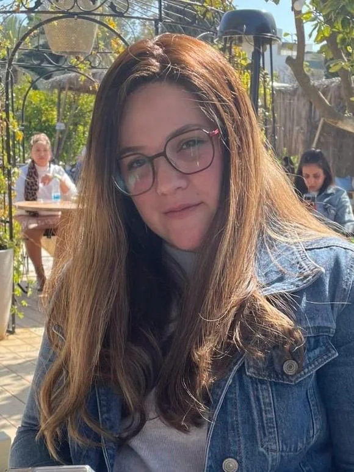

מי אנחנו
נעים מאד, אנחנו 5M Group ואתם?
מי אנחנו
נעים מאד, אנחנו 5M Group ואתם?
מי אנחנו
נעים מאד, אנחנו 5M Group ואתם?
מי אנחנו
נעים מאד, אנחנו 5M Group ואתם?
מי אנחנו
נעים מאד, אנחנו 5M Group ואתם?

מי אנחנו
נעים מאד, אנחנו 5M Group ואתם?

אם קלטנו נכון,
אתם אנשים שחושבים קדימה.
מאלו שחשוב להם לתכנן את החיים, למקסם הזדמנויות ולדאוג היום כדי לסדר את העתיד.
איך ידענו? כי גם אנחנו.

המייסד
רפי ויינר
כלכלן, בעל תואר תלת תחומי במנהל עסקים, מימון, שוק ההון ונדל"ן, מוסמך מטעם משרד הבינוי והשיכון הישראלי ויועץ מימון בכיר.
מייסד ובעלים משותף של חברת Are White Stone Real Estate עם ד"ר ליאור אמסלם דירקטור באפריקה ישראל בדימוס, מחבר הספר הכלכלי "מי הזיז את הנדל"ן שלי".
הכירו את הצוות שלנו>>הכירו את הצוות שלנו
לצד רפי פועל צוות מומחים בתחומי הכלכלה, המימון, הנדל"ן, המשפט, המס, שוק ההון ועוד, אשר יחד משלבים ידע וניסיון בהצמחת ההון של מאות משפחות.

כלכלה ומימון
רותי פרידליס
מייצרת שליטה ובהירות בכסף הביתי. בונה תשתית יציבה שמאפשרת התקדמות.
- רותי פרידליסמייצרת שליטה ובהירות בכסף הביתי. בונה תשתית יציבה שמאפשרת התקדמות.
- נתנאל וינברגמזהה כספים רדומים ומחדד מבנים קיימים. מתרגם נתונים להחלטות שמייצרות צמיחה אמיתית.
- ישראל וינוגרדפותח אפשרויות מימון במקום שאחרים נעצרים. בונה מימון חכם שמשרת אסטרטגיה לאורך זמן.
- עו״ד מיכאל צ'ירטוקמייצר יציבות משפטית בתוך מורכבות. שומר על תהליך מדויק, שקוף ונכון לכל אורכו.
- עו״ד יאיר רוזנברגגורם משפטי נבחר המלווה את הפעילות. פועל בדיוק מוחלט ובוחן כל פרט לעומק.
- עו״ד יוסי סילםקורא עסקאות מעבר למסמך. מקדים סיכונים ובונה מעטפת משפטית להתקדמות בטוחה.
- אהרן קפלןחי את השוק ביום יום ומזהה הזדמנויות לפני שהן מגיעות לחשיפה רחבה.
- בני גולדמשלב שטח ואסטרטגיה, ומתרגם מציאות מורכבת להזדמנויות ברורות.
- יענקי רייניץמתאים נכסים לאנשים מתוך הבנה שכל מבנה כלכלי דורש התאמה מדויקת.
- איציק אליהופועל באזורים לפני פריצה ומזהה היכן העתיד הכלכלי מתחיל להיבנות.
- פטריק אלפסימניע תהליכים במהירות ובדיוק, ומוביל לעסקאות משביחות ואיכותיות.
- ישי קוביקורא נכסים במהירות ובדיוק, ומבדיל בין פוטנציאל אמיתי לרעש.
- שמעון מנגיסטומחובר למקורות בשטח ומביא עסקאות שאינן מגיעות לשוק הפתוח.
- דוד וקניןמנהל נכסים באחריות מלאה, שומר על יציבות, תשואה ושקט לאורך זמן.
- רבקה מוזרמחזיקה מערכת מורכבת בדיוק שקט. מתזמנת תהליכים כך שהכול מתקדם בזמן, בביטחון מלא.
יודעים למה קוראים לנו 5M?
כי זו המטרה הבסיסית והפשוטה ביותר שלנו:
להביא אתכם כמה שיותר מהר לתיק נכסים בשווי של +5M ₪, שיכול לייצר לכם תשואה פסיבית סולידית של +20K ₪ בחודש, וניתן למשוך אותה הביתה מבלי לפגוע בקרן.
- 5M ₪תיק נכסים בשווי 5M ₪ שמניב תשואה גבוהה.
- 20K ₪משיכה של 5% בשנה = 20K ₪ בחודש הכנסה פסיבית.
- עצמאותביטחון לעתיד, חופש תעסוקתי ועצמאות כלכלית.
וכך חברים, נראית תחילתה של עצמאות כלכלית!
בואו להכיר יותר>>